Step 01 · Cleanse
Dew Cloud Cleanser
A low-foam daily cleanser that lifts away sunscreen, excess oil and everyday buildup while keeping the skin feeling comfortable, soft and ready for the next step.
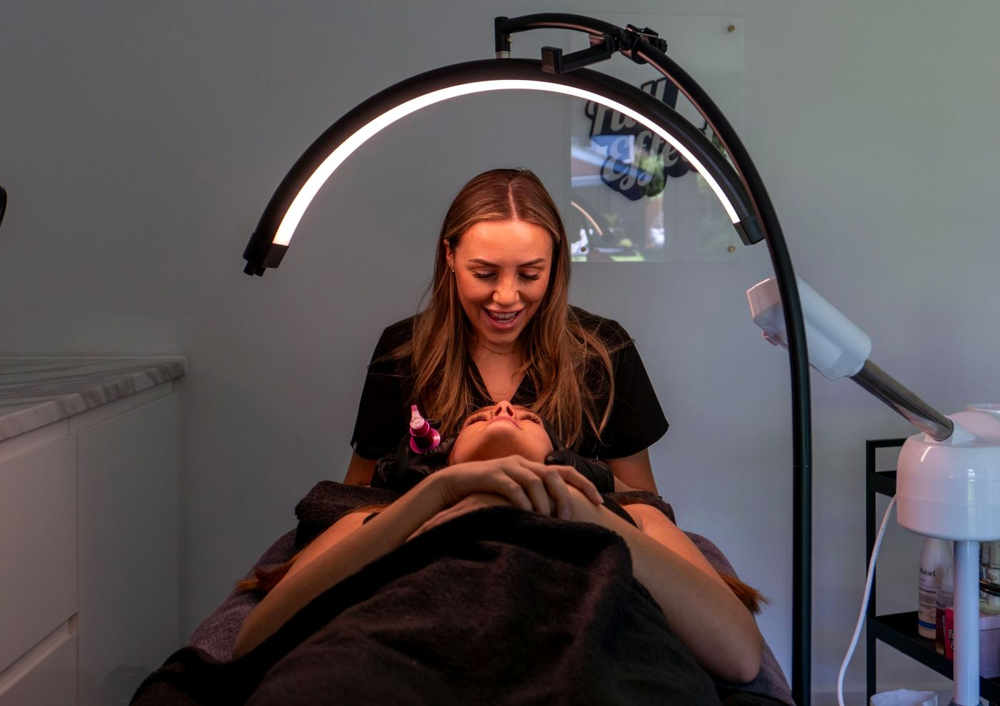
Learn the role of each step, discover products by concern, and keep your routine focused. The goal is to explain the reason behind each step so users can build a routine with fewer, more intentional choices.
Home 2 uses a more editorial discovery pattern so it does not feel like a duplicate storefront. The goal is to explain the reason behind each step so users can build a routine with fewer, more intentional choices.
An education-led pattern inspired by guided skincare discovery—adapted into Lumera’s own routine language and products.
A low-foam daily cleanser that lifts away sunscreen, excess oil and everyday buildup while keeping the skin feeling comfortable, soft and ready for the next step.
A lightweight 5% niacinamide serum created for easy daily layering, helping balanced-looking routines feel smoother without adding a heavy or sticky finish.
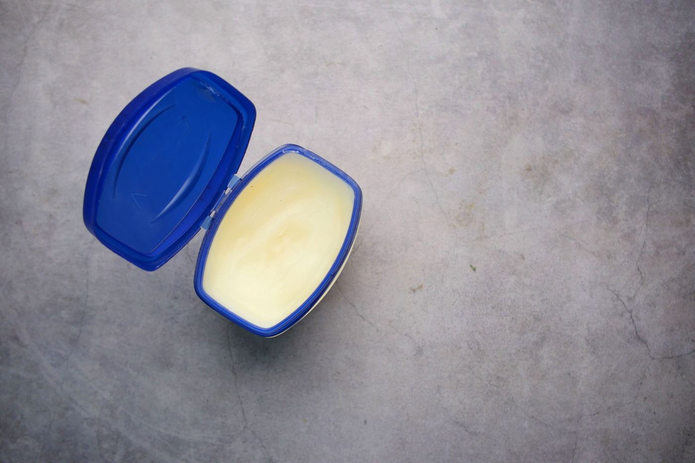
A ceramide-focused moisturizer with a cushioned texture designed to support comfortable, hydrated-feeling skin and finish both morning and evening routines without heaviness.
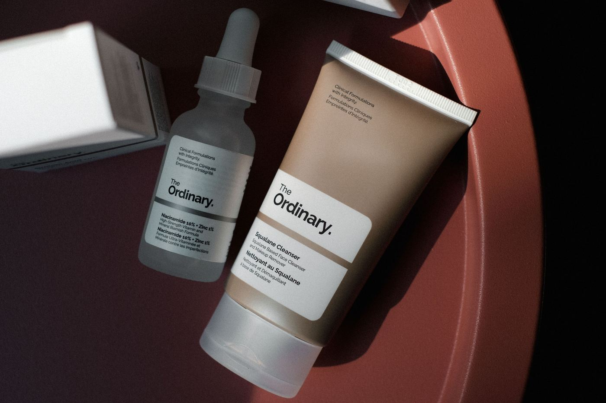
A low-foam daily cleanser that lifts away sunscreen, excess oil and everyday buildup while keeping the skin feeling comfortable, soft and ready for the next step.
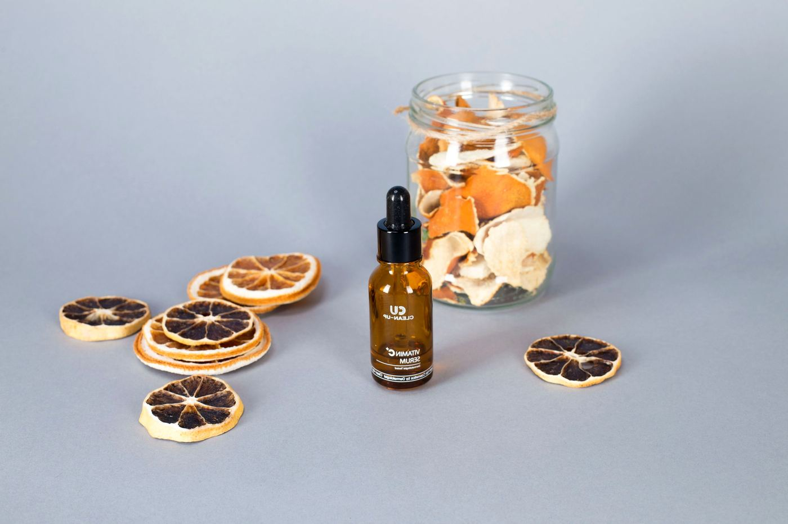
A brightening-oriented vitamin C serum with a light texture made for morning routines, pairing easily with moisturizer and sunscreen without making the routine feel crowded.
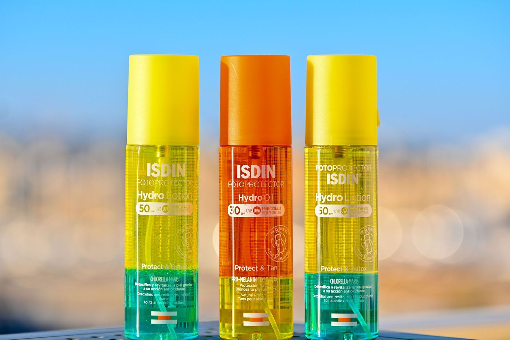
A fluid daily sunscreen step with a lightweight finish that layers comfortably over moisturizer and helps complete a simple morning routine with everyday protection.

A low-foam daily cleanser that lifts away sunscreen, excess oil and everyday buildup while keeping the skin feeling comfortable, soft and ready for the next step.

A ceramide-focused moisturizer with a cushioned texture designed to support comfortable, hydrated-feeling skin and finish both morning and evening routines without heaviness.
A fluid daily sunscreen step with a lightweight finish that layers comfortably over moisturizer and helps complete a simple morning routine with everyday protection.
A calm routine with a gentle cleanser, ceramide moisturizer and lightweight sunscreen. The goal is to explain the reason behind each step so users can build a routine with fewer, more intentional choices.
View Collection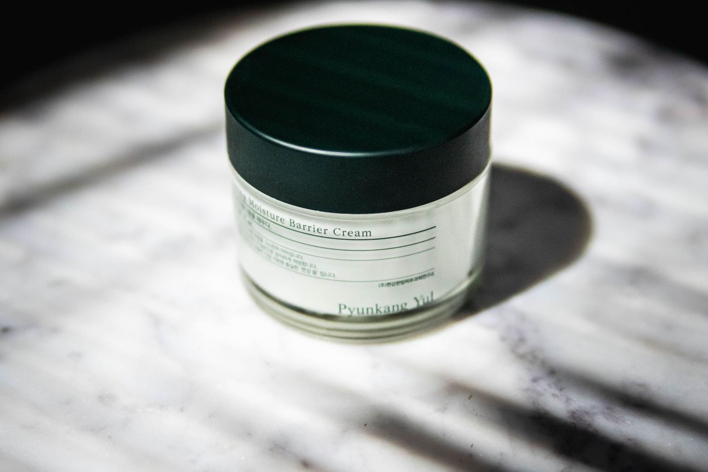
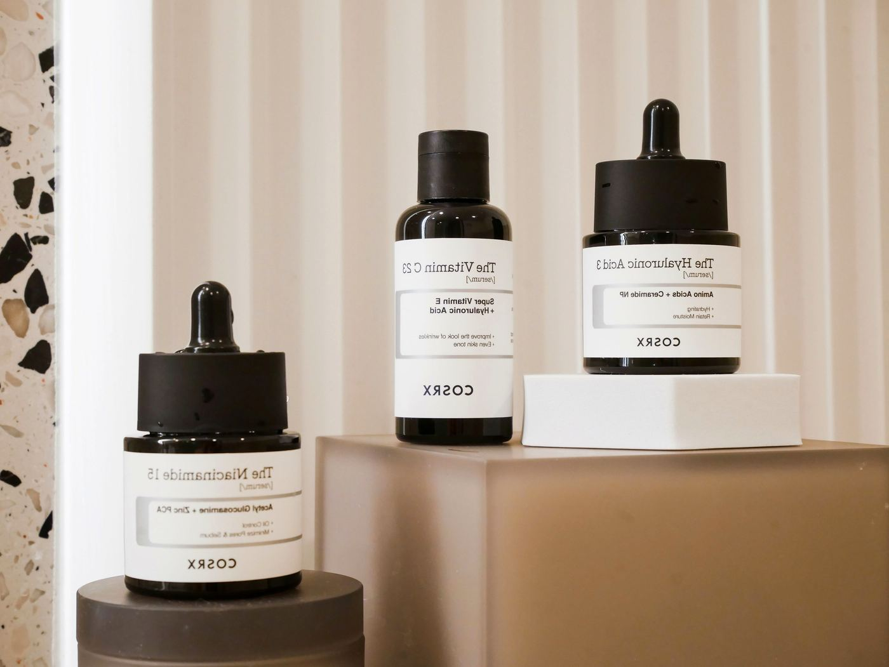
Explore why ingredients are included, their typical skincare role and which products contain them. The goal is to explain the reason behind each step so users can build a routine with fewer, more intentional choices.
Explore IngredientsInstead of presenting isolated bottles, Lumera connects skin type, concern, ingredient role and routine order so shoppers can see how each choice fits into the whole.
Explore Ingredient Roles
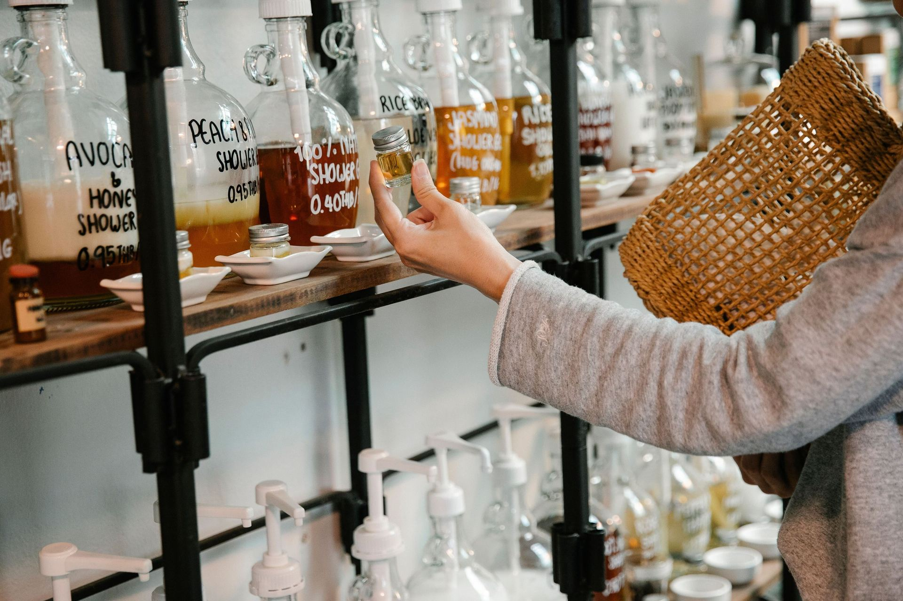
A clear baseline and one main priority make every product choice easier to understand. The goal is to explain the reason behind each step so users can build a routine with fewer, more intentional choices.
Lumera starts with context: how your skin behaves, what you want to focus on, and what each step is meant to do. Products come after that—not before.
Look at how your skin generally behaves through the day before choosing a category. The goal is to explain the reason behind each step so users can build a routine with fewer, more intentional choices.
Focus on the concern that matters most right now so the routine stays simple and intentional. The goal is to explain the reason behind each step so users can build a routine with fewer, more intentional choices.
Know whether a product cleanses, treats, moisturizes or protects—and where it belongs. The goal is to explain the reason behind each step so users can build a routine with fewer, more intentional choices.
Let ingredient knowledge help you compare options without turning the routine into a long checklist. The goal is to explain the reason behind each step so users can build a routine with fewer, more intentional choices.
Four simple principles help turn skincare education into clearer, more intentional product choices. The goal is to explain the reason behind each step so users can build a routine with fewer, more intentional choices.
Start with how your skin generally behaves before choosing products by trend. The goal is to explain the reason behind each step so users can build a routine with fewer, more intentional choices.
Focus on one main priority so the routine stays clear instead of becoming crowded. The goal is to explain the reason behind each step so users can build a routine with fewer, more intentional choices.
Know whether each product cleanses, treats, moisturizes or protects—and when to use it. The goal is to explain the reason behind each step so users can build a routine with fewer, more intentional choices.
Introduce new steps gradually so you can understand how each change fits your routine. The goal is to explain the reason behind each step so users can build a routine with fewer, more intentional choices.
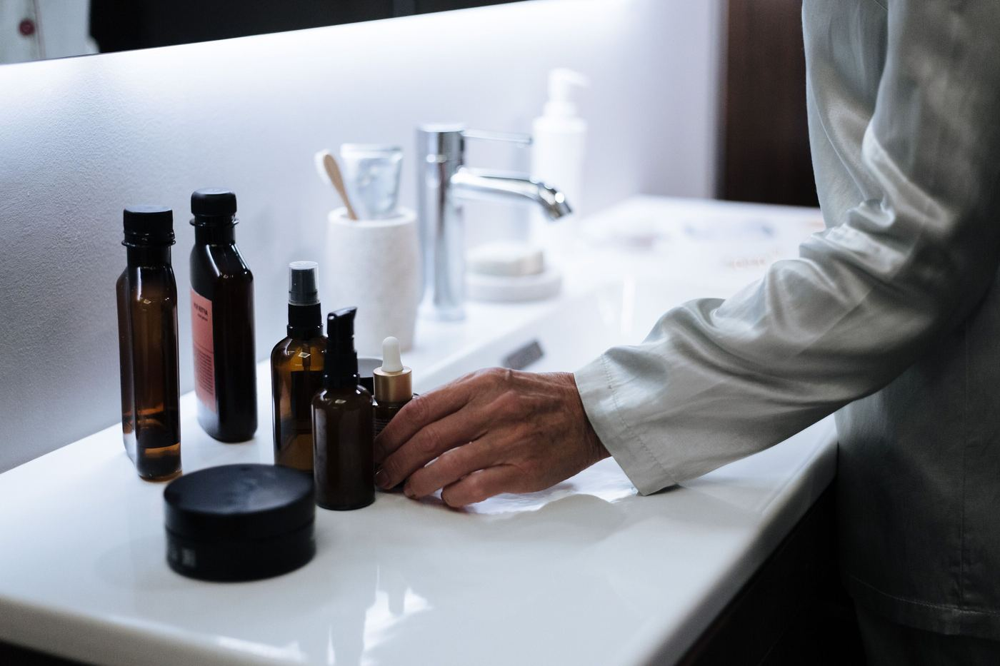
Learn a practical order for cleansing, treatment, moisturizer and daytime protection, with simple rules that help keep product layering clear and repeatable.
Read article →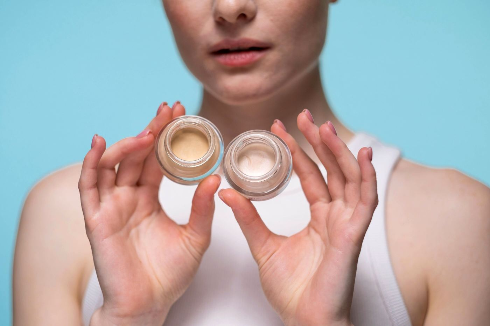
A beginner-friendly guide to dry, oily, combination, sensitive and normal skin, including everyday characteristics and how texture preferences can shape a routine.
Read article →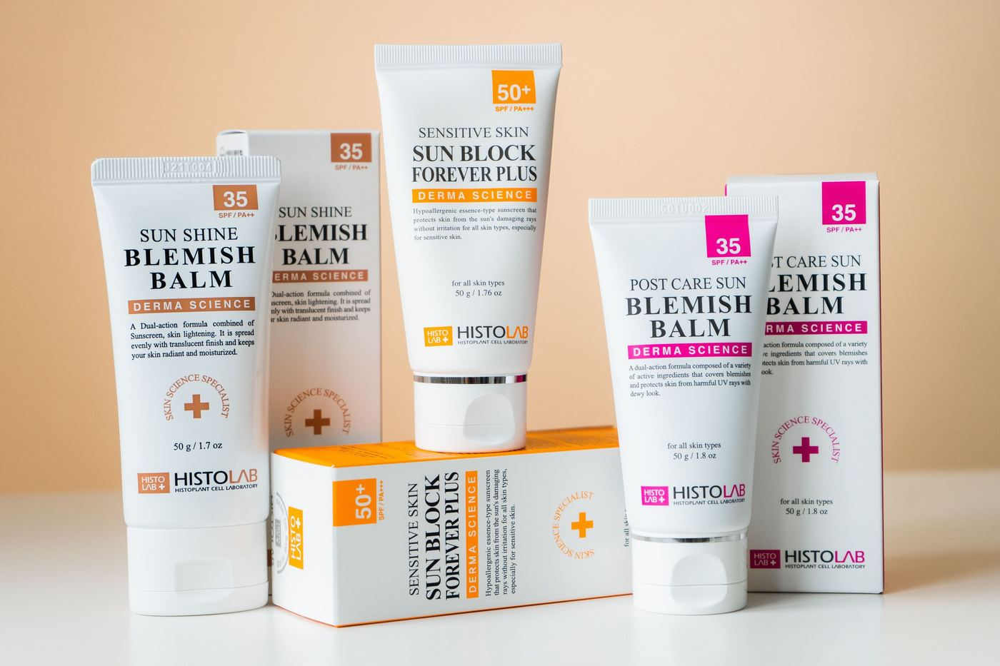
Understand where sunscreen belongs in a morning routine, how it layers over skincare and why a comfortable texture can make daily use easier to maintain.
Read article →Share your skin type, main concern, current routine and product interests. The consultation form is designed as a useful next step after the education journey.
Request Guidance